３ カルテ
３－１ テンプレートを利用したカルテ記入
（１） カルテをクリックします
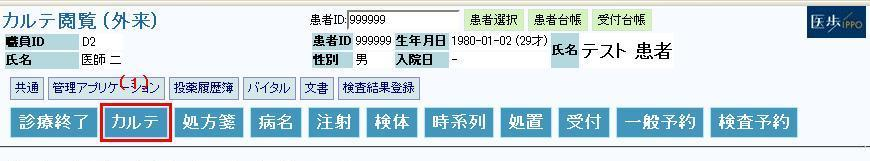
（２） 直近のカルテが表示されます
（３） テンプレートアイコンをクリックします
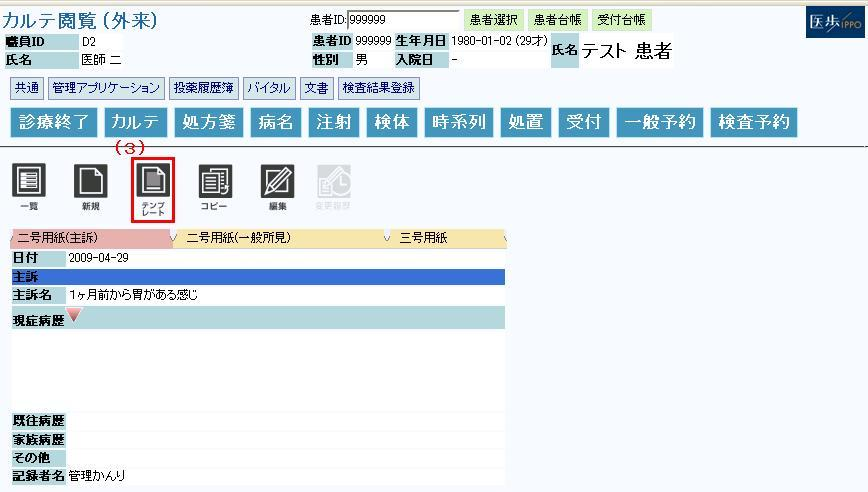
（４） テンプレート選択画面が表示されます
（５） テンプレートを選択します（例：インフルエンザ）
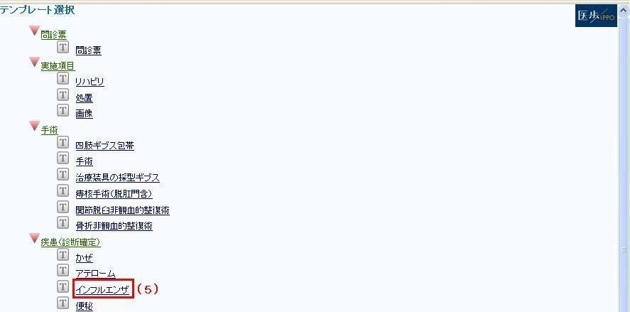
（６） テンプレートの必要項目を入力し、「編集完了」ボタンをクリックします
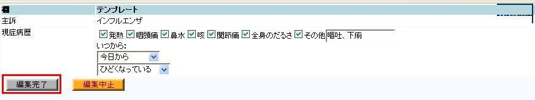
（７） テンプレートで入力した項目がカルテに反映されます
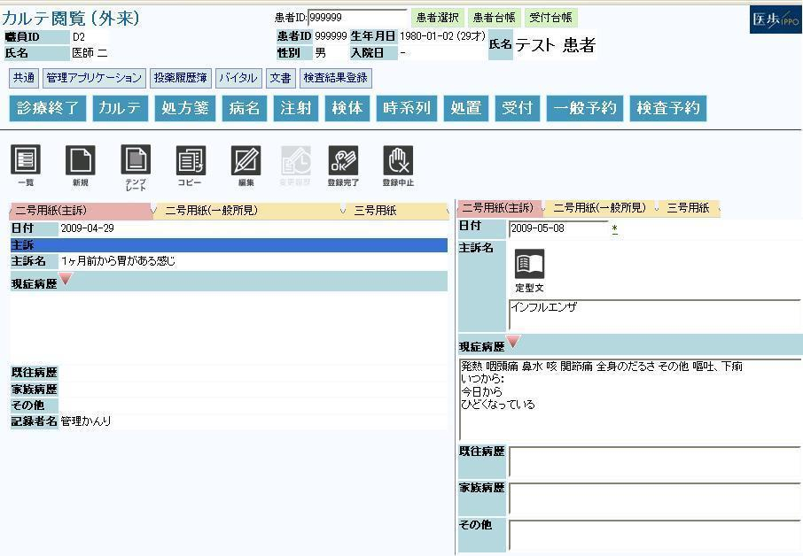
（８） 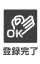登録完了アイコンをクリックします
（９） 記入を終えたカルテを保存します
３－２ シェーマ図の記入
（１） カルテ三号用紙タブをクリックします
（２） ①をクリックします
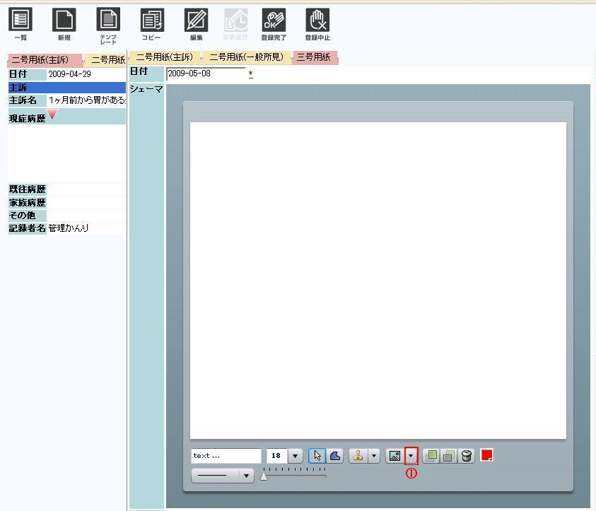
（３） シェーマ図は部位別に分類しています。部位名左②をクリックします
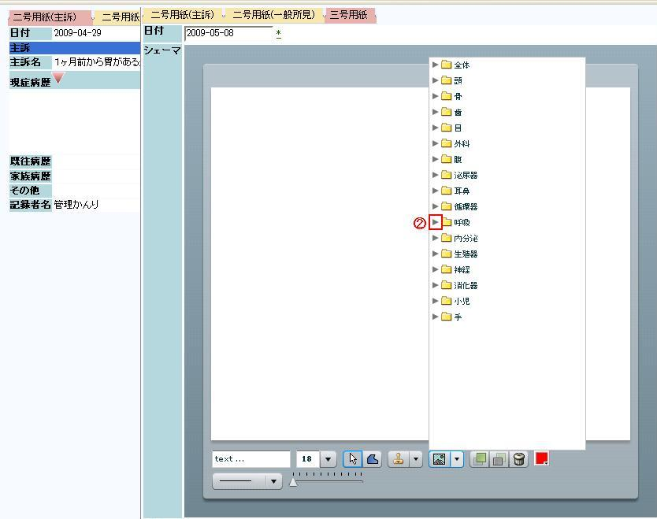
（４） ③シェーマ図を選択します
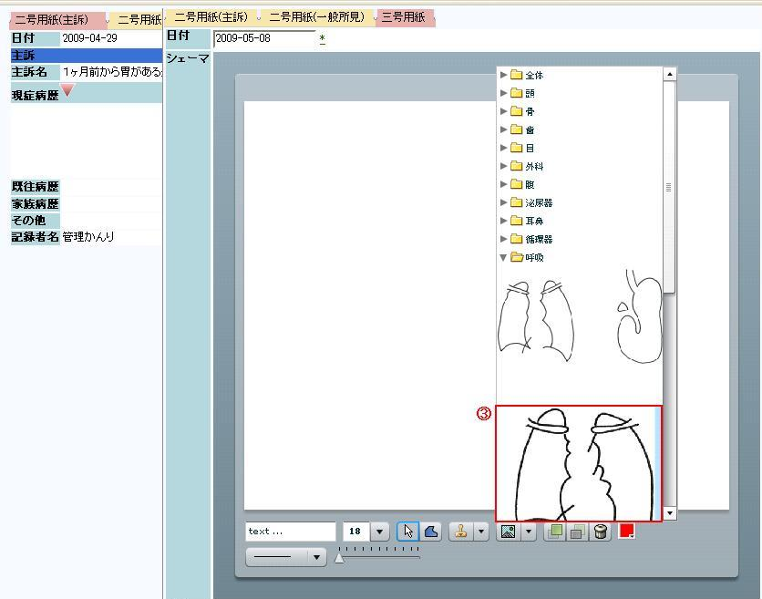
（５） シェーマ図の選択が完了します
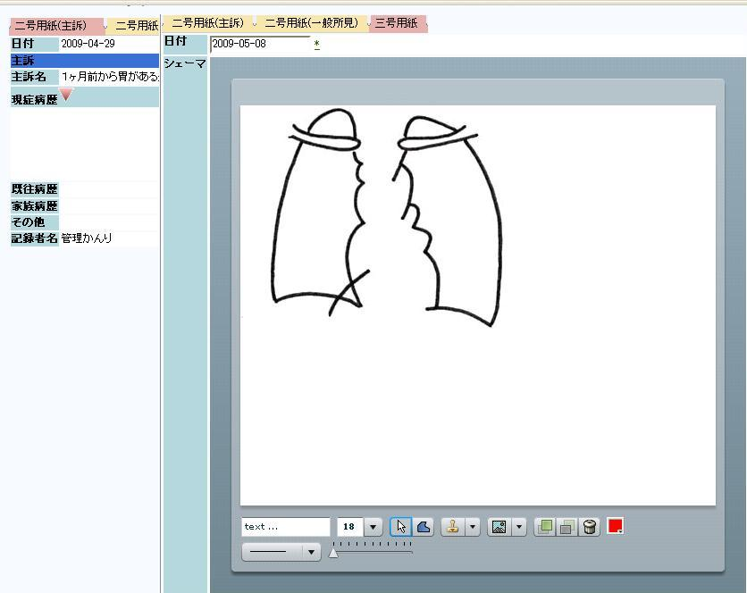
（６） シェーマ図を編集します
①：シェーマ図に文字を入力します
②：文字のフォントを選択します
③：線の太さをを選択します
④：曲線を引きます
⑤：オートシェイプを選択します
⑥不必要な入力を消去します
⑦パレットより色を選択します
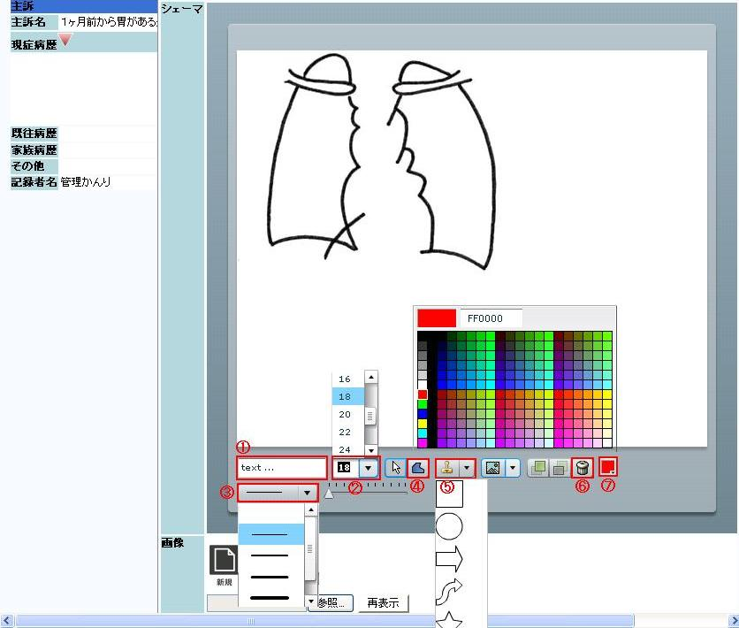
（７） 登録完了アイコンをクリックします
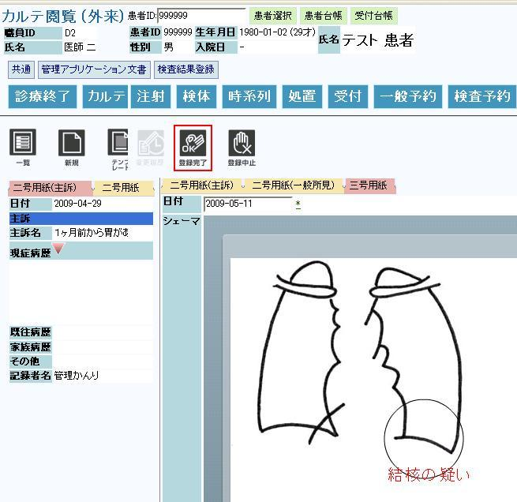
３－３ 画像の貼り付け
（１） 画像の貼り付けます
①：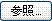参照ボタンをクリックします
②：ポップアップ画面が表示されます
③：カルテに貼り付ける画像をクリックします
④：開くボタンをクリックします
⑤：貼り付け後の画像を閲覧する場合は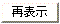再表示ボタンをクリックします